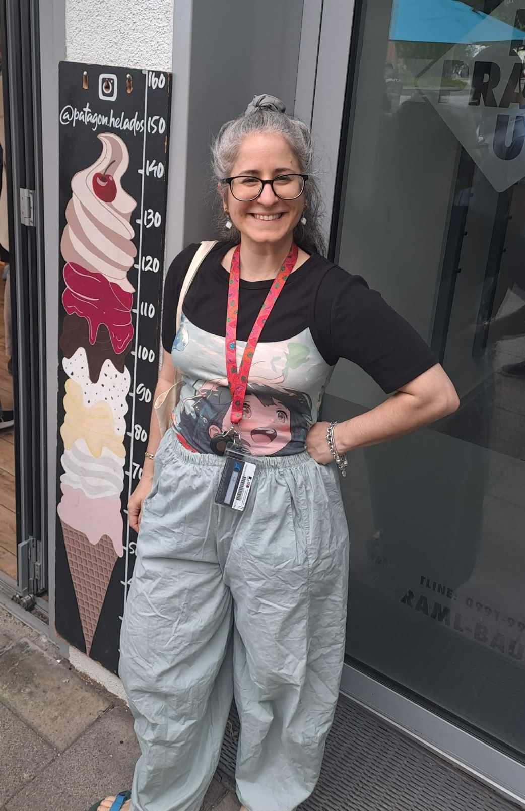

I am a Computational Evolutionary Biologist investigating how (epi)genetic variation arises, is regulated, and shapes evolution in natural populations. Currently, I am a PhD candidate in the Division of Evolutionary Biology at LMU Munich and the International Max Planck Research School for Biological Intelligence (IMPRS-BI).
My research sits at the intersection of quantitative genetics and computational genomics. I develop statistical frameworks to separate biological signal from technical noise in large-scale epigenomic datasets, leveraging pedigrees of 1,200+ individuals to model the heritability of DNA methylation.
With a background spanning Biology and Bioinformatics, I build open-source pipelines to decode the complex mechanisms that drive biological diversity.
Beyond research, I am interested in the role science communication plays in bridging the gap between researchers and the general public. I enjoy communicating science both through writing and live public outreach events.I want to know to what extent DNA methylation patterns are passed from parents to offspring in wild blue tit populations. By utilizing pedigree data and Em-seq/RRBS sequencing, my project is testing whether 5mC can be used as a quantitative trait and quantify the inheritance patterns of these epigenetic marks within families (broods) leveraging additional power from extra pair young.
DNA methylation is very noisy by its nature. Because it is difficult to separate true biological variation from technical noise, my work is focused in developing and applying a statistical framework in order to quantify and model DNA methylation repeatability in blue tits using technical replicates.
To make prescise tools we have to test them. Implemented comparative bioinformatics pipelines to evaluate the performance of the deep learning–based microRNA target prediction model DIANA-microT microT-CNN against existing prediction algorithms. Analyzed variation in predicted miRNA–mRNA interactions and binding sites across methods to improve the detection of canonical and non-canonical regulatory patterns in molecular data.
How is variation in protein expression associated with COVID-19 vaccination response? Using proteomic data, this project explored the molecular mechanisms underlying individual variation in vaccine efficacy. Looking for specific epigenetic "signatures" that predict how strongly an immune system will react to a stimulus.
Transposable elements (TEs) are major source of genetic variation. Developed an open-source bioinformatics pipeline to investigate the adaptive role of Transposable Elements (TEs) in the rice genome by analyzing SNP patterns surrounding TE insertions in Oryza sativa. Applied population genomics and selective sweep analyses to explore how polymorphic TE insertions may contribute to genomic adaptation.
House mouse shows Robertsonian fusions and is a great model for chromosomal speciation.This project focused on Robertsonian (Rb) chromosomal diversity at hybrid zones of Mus musculus domesticus in contact zones between chromosomal races GRT1 and GRT2 and acrocentric populations (2n=40), where extensive hybridization occurs in the Attica region of Greece. Enjoyed combining field sampling, cytogenetics and creating karyograms to study the contact zones.